The Nyquist Stability Criterion and Relative Stability
Introduction to Relative Stability
Relative stability refers to the degree to which a system tolerates changes in its parameters before becoming unstable. Unlike absolute stability, which simply tells us whether a system is stable or not, relative stability provides a measure of how close the system is to the boundary of instability.
Consider a plot representing the closed-loop poles on the sigma-jω (σ-jω) plane. Suppose we have two dominant poles in this system. If these poles are closer to the jω axis, the transient response of the system decays faster.
This positioning of the poles relative to the jω axis indicates the system’s relative stability.
The real part guides the envelope of the oscillating response.
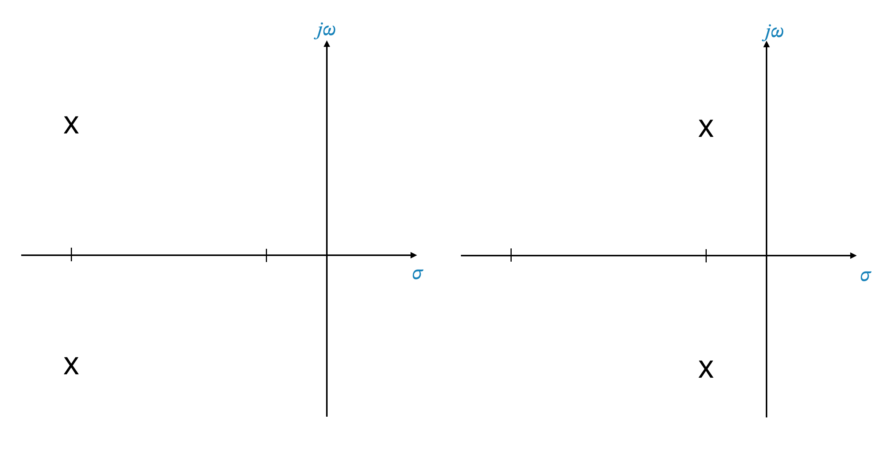
Key Concept: Dominant Poles and Transient Response
Dominant poles are those which have the most significant effect on the system’s behavior.
The closer these poles are to the jω axis, the slower the transient response decays, indicating poorer relative stability.
Transitioning to Frequency Domain
Now, let’s interpret these concepts in the frequency domain using the Nyquist plot.
The plots corresponding to the previous s-plane example might be as below (note that this is only an example):
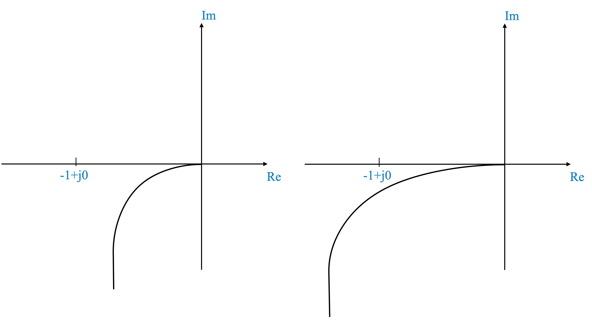
Plotting Examples
Insert two Nyquist plots here: 1. A plot showing a response closer to the point (-1, j0), indicating a system closer to instability. 2. Another plot showing a response further from the point (-1, j0), indicating a more stable system.
Interpreting Nyquist Plots for Relative Stability
The Nyquist plot’s proximity to the point (-1, j0) gives us an indication of the system’s relative stability.
Absolute vs. Relative Stability
Enclosing the point (-1, j0) indicates absolute stability.
The closer the plot is to this point, the higher the risk of instability.
Observing the Impact of Gain Increase through the Polar Plot
The polar plot is a graphical representation of a system’s frequency response, spanning from ω = 0 to ω = ∞.
The proximity of the polar plot to the critical point (-1, j0) is indicative of the system’s potential for sustained oscillations or instability.
Increasing the gain of the system tends to shift the polar plot closer to the critical point (-1, j0).
If this plot encircles the point (-1, j0), it is a signal that the system is moving towards instability.
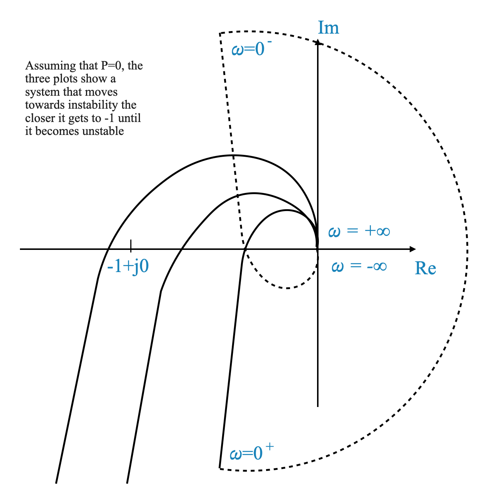
Assessing Relative Stability Using the Polar Plot
The key to understanding a system’s relative stability lies in gauging the distance of the polar (or Nyquist) plot from the point (-1, j0).
Determining this “relative distance” involves measuring how close the plot is to (-1, j0), which in turn reflects the system’s susceptibility to instability.
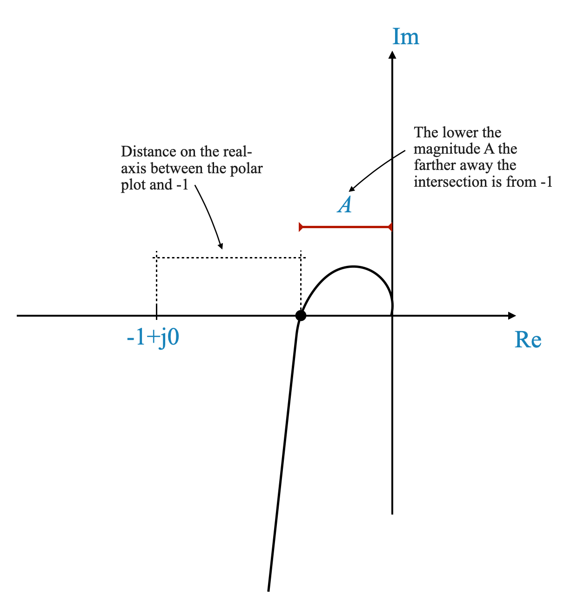
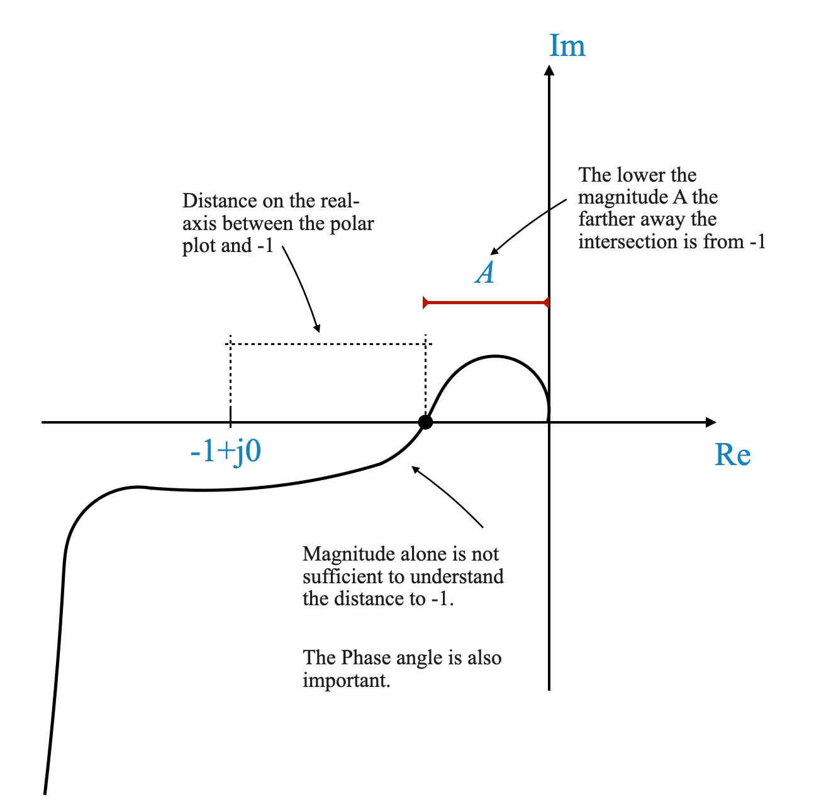
The Importance of Phase Angle
Not only the intersection with the negative real axis but also the phase angle of the plot is critical in assessing relative stability.
Two indices are often used to measure this: the point of intersection on the real axis and the phase angle at the point where the magnitude is unity.
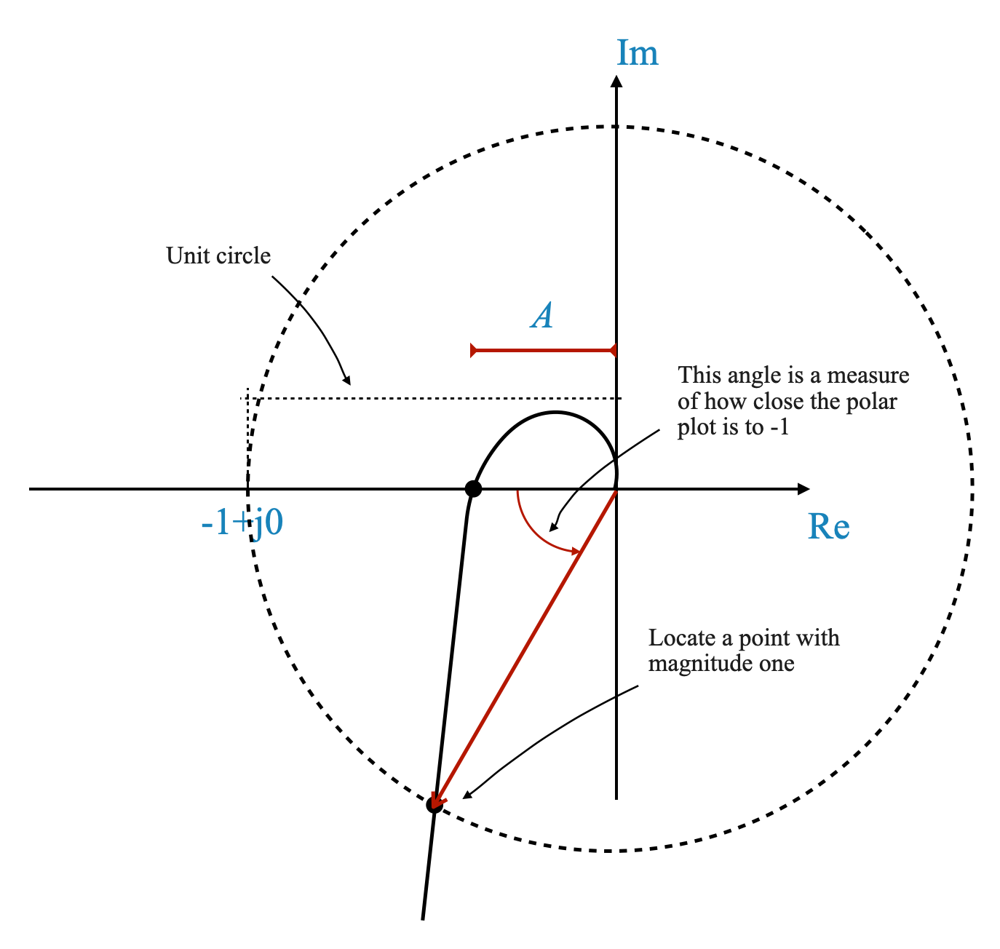
Indices for Measuring Relative Stability
Magnitude at Intersection: This is measured where the Nyquist plot intersects the negative real axis. The lower this magnitude, the more stable the system is considered.
Phase Angle: A unit circle centered at (-1, j0) is considered. The angle at which this circle intersects the Nyquist plot provides a measure of relative stability.
You can also say that these two indices are not necessarily enough. However, they provide a simple algorithm to quantify the relative stability.
Gain and Phase Margins
Gain Margin
Let’s delve into the scenario where the system’s gain, denoted as \(K\), is progressively increased. With this increment in gain, the overall magnitude of the Nyquist plot also rises. At a specific gain value, the plot intersects the critical point of (-1, j0).
To determine the precise gain increment required for the plot to intersect (-1, j0), we use the factor \(\frac{1}{a}\). Here, \(a\) represents the distance of the plot’s intersection from the real axis in its original state (before gain increase).
By applying a gain of \(\frac{1}{a}\) to your polar plot, you align its intersection with the real axis precisely at the -1 point.
The Gain Margin (GM) is mathematically expressed as \[GM = \frac{1}{a}.\] This value represents the threshold before the system reaches a state of marginal stability or instability.
The gain margin looks at the amplification factor at which a system becomes unstable.
The following illustration depicts this concept visually:
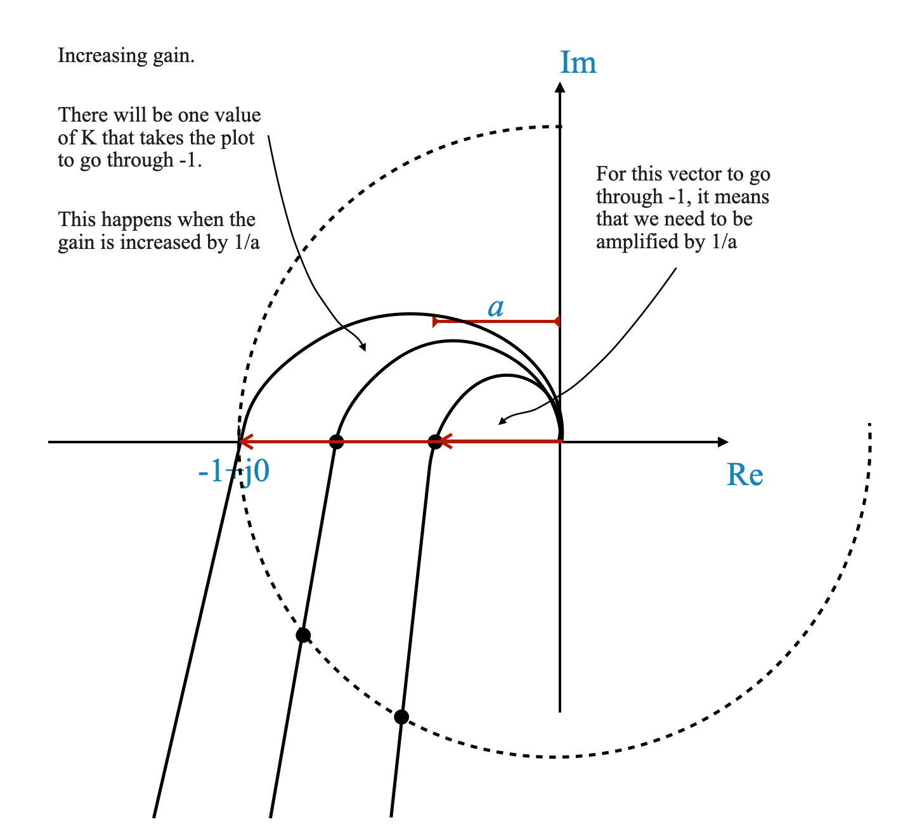
Phase Margin
To further clarify this concept, let’s examine a specific example:
Consider the transfer function:
\[
G(s) = K_1\frac{1 + sT_1}{s(1 + sT_2)}
\]
In this case, the number of open-loop poles in the right-half plane, denoted as \(P\), equals 0. This scenario corresponds to the Nyquist plot shown below:
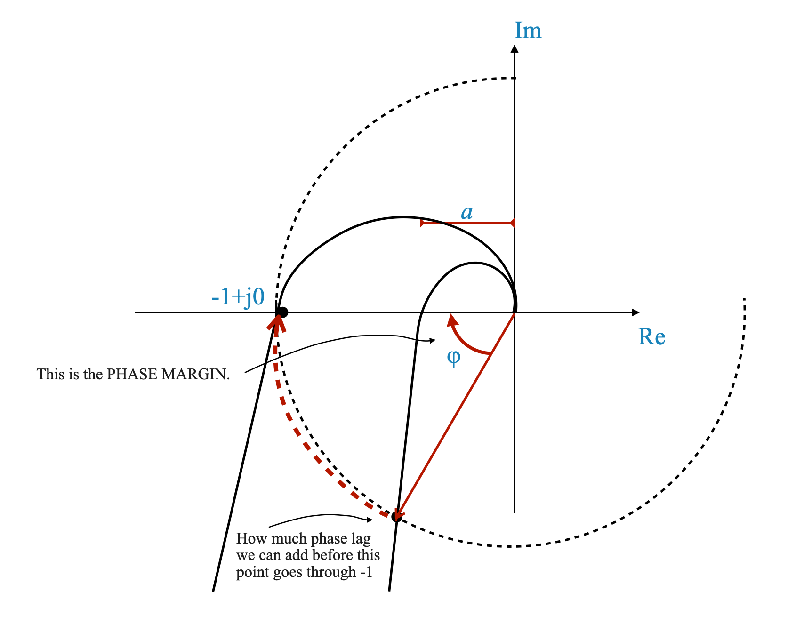
Focusing on the phase margin, denoted as \(\phi\), we analyze its significance in system stability:
The phase margin \(\phi\) represents the additional phase lag that can be introduced into the system without causing it to intersect the critical point (-1, j0).
Essentially, it quantifies the system’s capacity to handle phase shifts without falling into instability.
When considering the phase margin, a positive value of \(\phi\) is indicative of the system’s robustness.
This positive phase margin is the threshold of additional phase lag that, if incorporated into the system, would lead it to the very edge of instability, yet not cross over into an unstable state.
The presence of a positive phase margin serves as a safeguard against instability, demonstrating the system’s ability to withstand certain levels of phase alterations.
Infinite Gain Margin
Consider a system where the Nyquist plot becomes asymptotic to a line but never intersects. In such cases, the gain margin is considered infinite.
Consider the transfer function:
\[
G(s) = \frac{K}{s(1 + sT)}
\]
This function has the following Polar plot, which never intersects the point -1. It asymptotically gets closer to the real axis for \(K\) increasing.
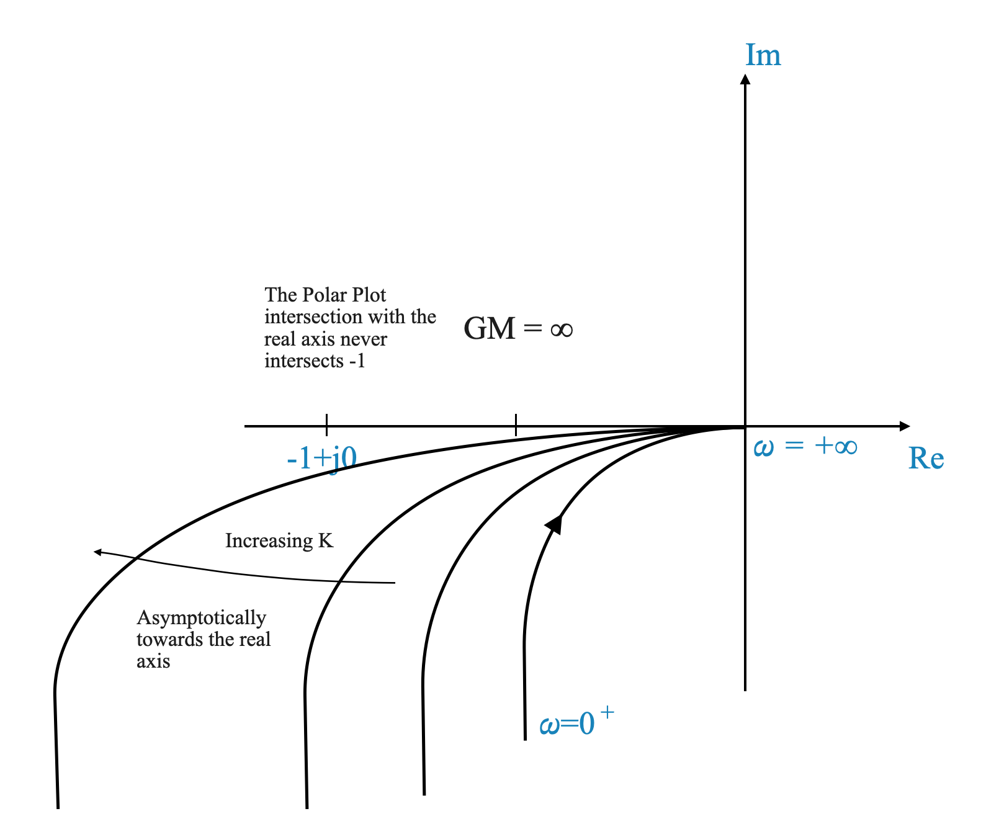
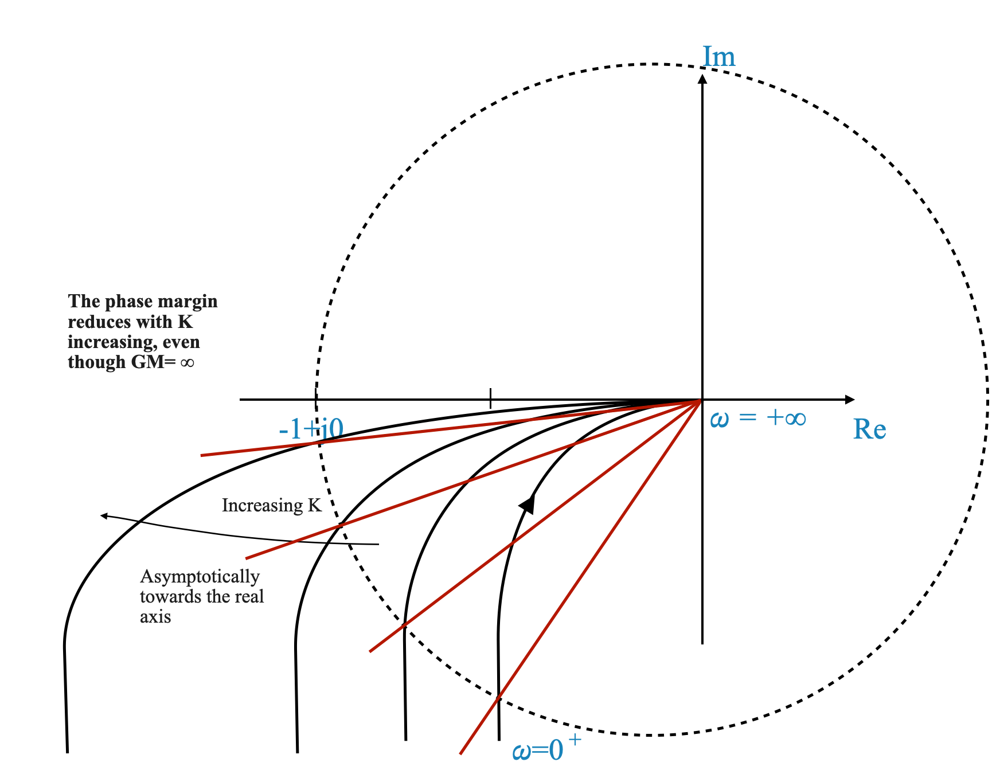
Implication:
While it may sound ideal, an infinite gain margin often indicates other stability factors to consider, primarily the phase margin. The phase margin in this case is better suited to measure the distance to the -1 point, and it reduces when we increase \(K\).
Understanding Gain and Phase Margins in Open-Loop Stable Systems
It’s important to recognize that open-loop unstable systems fall outside the scope of the conventional definitions of gain and phase margins.
These margins are specifically designed and applicable for systems that exhibit stability in their open-loop configuration.
Consequently, the assessments of gain and phase margins are primarily relevant and meaningful when dealing with open-loop stable systems. In cases where the system is open-loop unstable, these definitions are not directly applicable, and alternative methods of stability analysis should be considered.
While the majority of industrial plants and control systems are inherently open-loop stable, it is crucial to exercise special caution when encountering an open-loop unstable system. This scenario, though less common, requires a more nuanced approach to ensure effective and safe plant operation. Understanding and addressing the unique challenges posed by open-loop unstable systems is essential for maintaining system stability and reliability.
Type-0 Systems
Let’s explore a specific example of a type-0 system, where the degrees of the numerator and denominator of the transfer function are equal.
Transfer Function:
\[
G(s)H(s) = \frac{1 + sT_1}{1 + sT_2}
\]
This is a type-0 system with the following Nyquist Plot:
Stability Analysis: The system is stable for all \(T_1\) and \(T_2\). This makes the traditional definitions of gain and phase margin less meaningful.
We can show this using Python:
import numpy as npimport matplotlib.pyplot as pltimport control as ctlimport matplotlib.cm as cm# Define the ranges for T1 and T2 valuesT1_values = np.linspace(0.2, 1, 5) # Adjust the number of values as neededT2_values = np.linspace(0.5, 1.5, 5) # Adjust the number of values as needed# Prepare a colormapnum_plots =len(T1_values) *len(T2_values)colors = cm.viridis(np.linspace(0, 1, num_plots)) # Use 'viridis' colormap# Prepare the plotplt.figure(figsize=(10, 8))plt.title('Nyquist Plots for Different T1 and T2 Values')plt.xlabel('Real Axis')plt.ylabel('Imaginary Axis')# Iterate over combinations of T1 and T2color_idx =0for T1 in T1_values:for T2 in T2_values: num = [1, T1] den = [1, T2] G = ctl.TransferFunction(num, den)# Extract real and imaginary parts _, contour = ctl.nyquist(G, omega=np.logspace(-2, 1, 1000), return_contour=True) real, imag = np.real(G(contour)), np.imag(G(contour))# Plot each curve with a label and the same color for mirror image color = colors[color_idx] plt.plot(real, imag, label=f'T1 = {T1:.1f}, T2 = {T2:.1f}', color=color) plt.plot(real, -imag, color=color) # Nyquist plot is symmetric color_idx +=1# Add legend, grid, and axis linesplt.legend()plt.grid(True)plt.axhline(y=0, color='k') # Add x-axisplt.axvline(x=0, color='k') # Add y-axisplt.xlim([-2, 2]) # Adjust x-axis limits as neededplt.ylim([-2, 2]) # Adjust y-axis limits as needed# Show the plotplt.show()
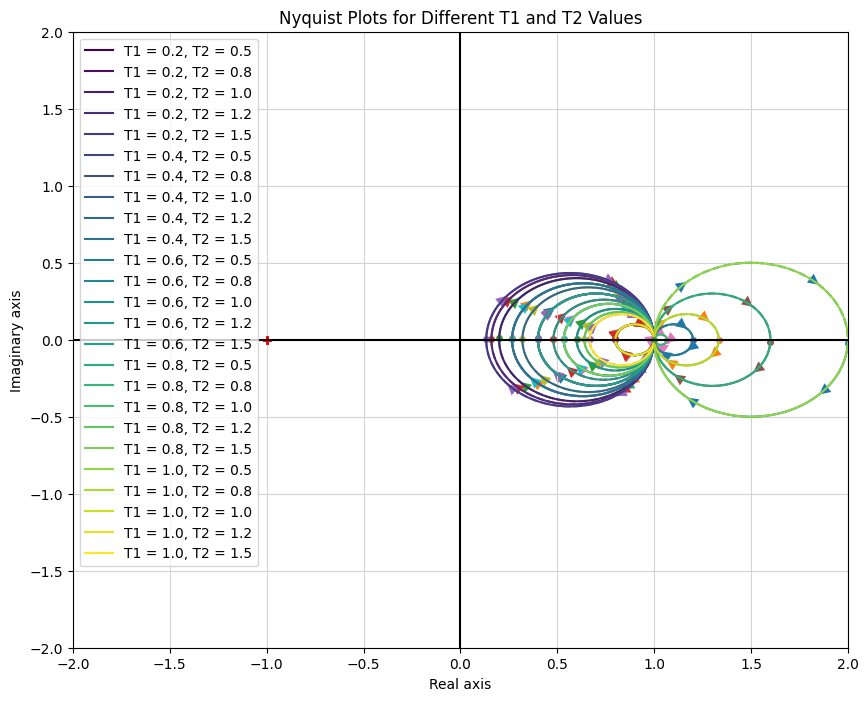
Addressing Open-Loop Unstable Systems
When discussing gain margin and phase margin, their application in the context of open-loop unstable systems requires special attention.
Dealing with Open-Loop Unstable Systems
Characteristics: These are systems where one or more open-loop poles are located in the right-half of the s-plane.
Relevance to Stability Margins: In such systems, the conventional interpretations of gain and phase margin are not straightforwardly applicable. A key aspect of these systems is that their Polar Plot needs to encircle the critical point (-1+j0) a specific number of times to achieve closed-loop stability.
An Illustrative Example
Transfer Function:\[
G(s)H(s) = \frac{s + \frac{1}{2}}{s(s + 1)(s - 1)}
\] In this instance, the Nyquist plot must loop around the point (-1+j0) once to ensure stability.
Additional Notes: For open-loop unstable systems, comprehensive Nyquist plots or alternative techniques such as root locus analysis are typically employed. The conventional stability margins of gain and phase are not typically used to evaluate the robustness of these systems, as they may not provide clear insights. In each case, a tailored approach is needed to account for the specific encirclements in the Nyquist plot.
Below is a Python script to visualize its Nyquist Plot.
import numpy as npimport matplotlib.pyplot as pltimport control as ctl# Define the numerator and denominator of the transfer function# G(s)H(s) = (s + 0.5) / (s*(s + 1)*(s - 1)) num = [1, 0.5]den = [1, 0, -1, 0]# Create the transfer functionG = ctl.TransferFunction(num, den)# Compute and plot the Nyquist plotctl.nyquist_plot(G)plt.title('Nyquist Plot of G(s)H(s)')plt.xlabel('Real Axis')plt.ylabel('Imaginary Axis')plt.grid(True)# Show the plotplt.show()
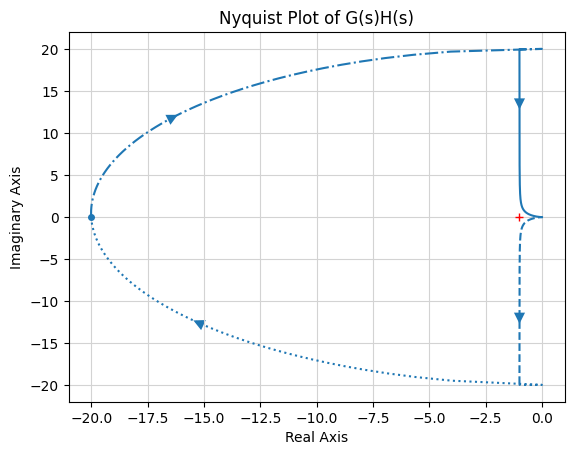
Understanding Crossover Frequencies
In control systems, two critical frequencies are the gain crossover frequency (\(\omega_{gc}\)) and the phase crossover frequency (\(\omega_{pc}\)).
These frequencies are important to determine the stability and performance of a system.
Gain Crossover Frequency (\(\omega_{gc}\))
Definition: The frequency at which the magnitude of the open-loop transfer function G(jω)H(jω) is 1 (0 dB).
Importance: It is the frequency at which the system’s gain equals unity.
Calculation: Determine \(\omega_{gc}\) from the Nyquist or polar plot where |G(jω)H(jω)| = 1.
Phase Crossover Frequency (\(\omega_{pc}\))
Definition: The frequency at which the phase angle of G(jω)H(jω) reaches -180°.
Importance: It indicates the frequency at which the system’s phase shift might lead to instability.
Calculation: Determine \(\omega_{pc}\) from the Nyquist or polar plot where the phase angle of G(jω)H(jω) is -180°.er (\(\omega_{PC}\)):** This is the frequency at which the phase angle of the system reaches -180 degrees.
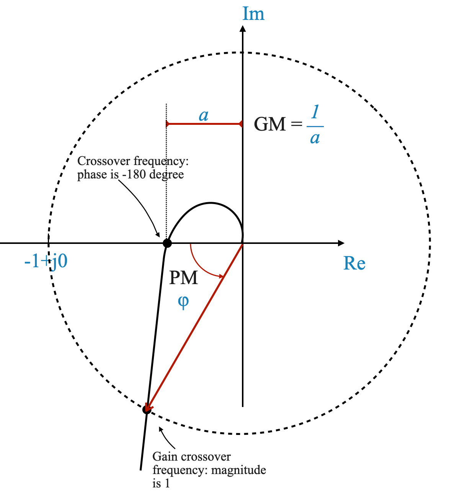
Clarifying Gain and Phase Margins in Control Systems
The gain margin, denoted as $ $, is a critical parameter in assessing a system’s stability. It’s important to understand that this margin is not directly the gain of the system itself. Instead, it becomes the gain only in the context of a system whose original plot is based on unity gain. In other cases, the gain margin represents the factor by which the system’s original gain can be modified.
Further Comments on the Gain Margin
Assuming an Open-Loop Stable system (\(P=0\))
For a stable system, the gain margin is always greater than 1.
For an unstable system, the gain margin is less than 1.
If the gain margin is less than 1, it implies that the system’s gain has been increased to a level where instability has been introduced. To return the system to a stable state, the gain must be reduced by this margin factor.
Further Comments on the Phase Margin
The phase margin is determined by measuring a specific angle on the Nyquist plot. This angle represents the amount by which the phase can be increased without leading to instability.
In systems that are open-loop stable, a positive phase margin indicates a buffer against instability, whereas a negative phase margin is a sign of potential instability.
Assume to measure the phase margin angle with respect to the negative real axis.